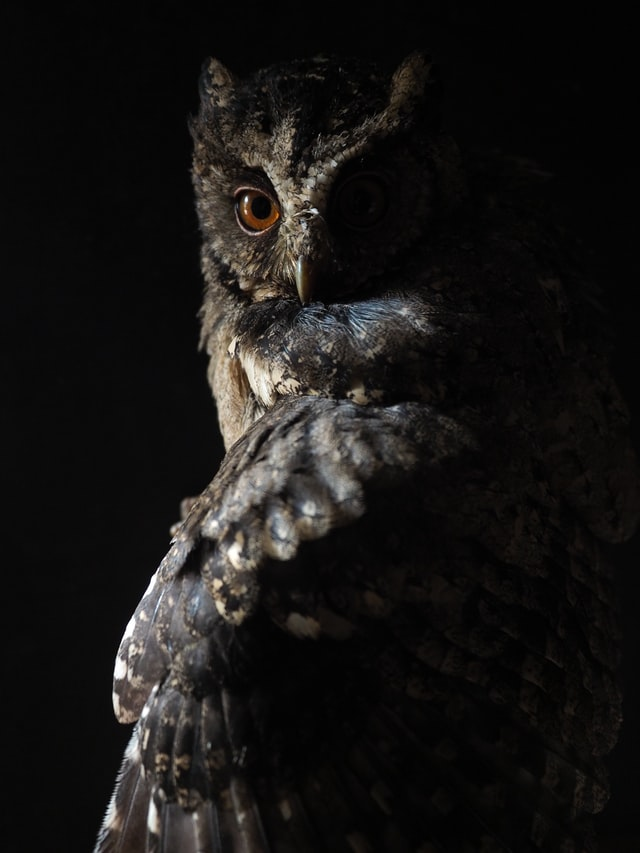

ANLMAL
OWL
올빼미와 부엉이는 어떻게 달라요?
생김새도 비슷하고 구분도 안되는 이 둘은 특징조차도 같습니다.
고개가 270도 돌아가며 날아갈때는
날개짓 소리가 들리지 않는다고 합니다.
이를 이용해 스텔스처럼 아무도 모르게 다가가
먹이를 낚아 챌 수 있다고 합니다.올빼미족이란 말이 생긴 이유가 올빼미과 새들이
야행성이라서 밤에 행동하는 사람들을 그렇게 불렸습니다.
주로 밤에 활동하며 조용한 밤에 조용히 날아가
먹이를 잡아내는 올빼미와 부엉이
이렇게 쉽게 이야기 하지만 먹이가 되는 입장에서는
갑자기 나타나는 이 둘이 정말 무서울 것 같습니다.맹금류의 새로 이런 특징들이 있습니다.
특징까지 비슷한 부엉이올빼미차이를 알려고
하는건 큰 의미가 없어 보입니다...
어떤 의미를 가지고 있을까?
부엉이 장식품을 많이들 가지고 계시는데
과연 어떤 의미들이 있을지 알아보도록 하겠습니다.
부엉이와 올빼미는 번식기에 새끼들을 위해
먹이를 잔뜩 잡아 둔다고 하는데
바로 이 것 때문에 먹을 복이 있는 집처럼
느껴지게 되고 부엉이 집을 찾게 되면
먹이가 많아 횡재를 한 느낌이 들게 되어
이 장식품들이 유행하게 된 것 같습니다.
